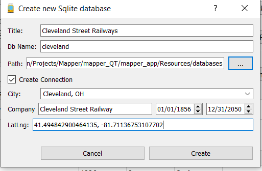
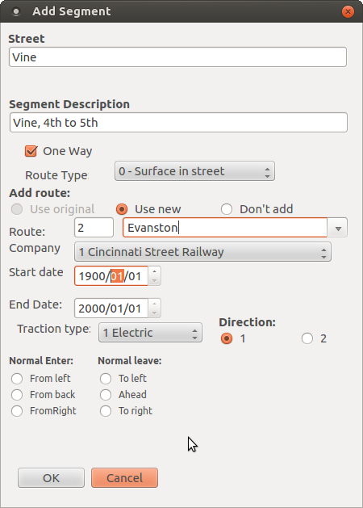
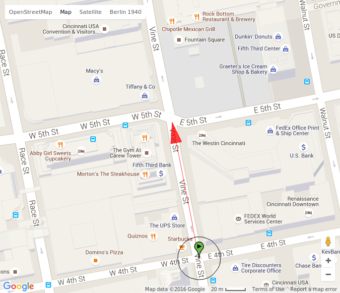
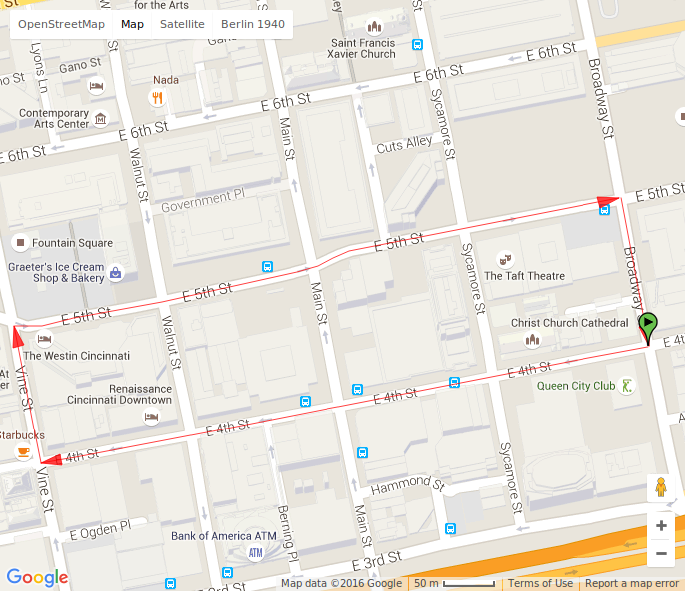
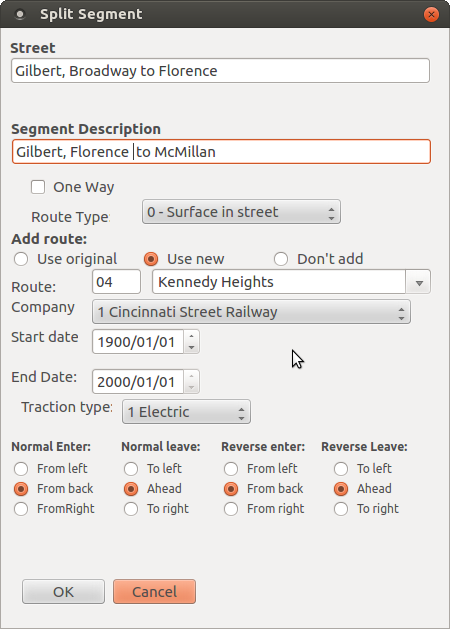
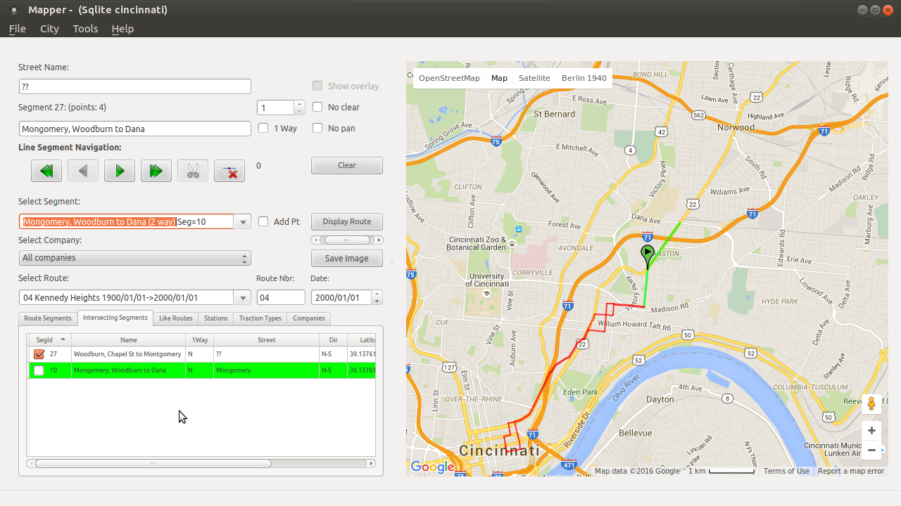
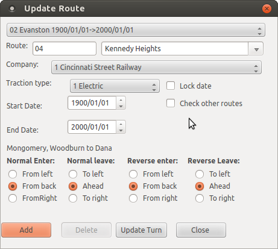

Creating a new database
On this page, we will define the steps necessary to establish a new
database and populating it with streetcar routes. As an example, let's
create a database for Cincinnati, Ohio. Initial data comes from a list
published in Cincinnati Traction History
Creating the database
From the Tools menu, select "Create new sqlite db" This will present a dialog:

- The "db name will be used as the name of the database file.
- The
path is the directory where the database file will be created. The
default is 'Resources/databases' in the program's directory.
- If Create Connection is checked, the new database will be added
to your list of connections. Other wise you will have to manually add
the database with the "edit connections dialog"
- City: should contain the name of the city as shown above.
- The company is the one for which you will be adding the initial routes for. More companies can be added later.
- The "Create" button will populate the database with some initial values.
Creating the first Segment
Before a route can be entered, the segments that make it up must be created. Here, the following routedescription will be used:
2 Evanston, 4th & Vine-Montgomery & Dana.
Vine-5th-Broadway-Gilbert-McMillan-Woodburn-Montgomery-Dana wye
Return, Montgomery-Woodburn-McMillan-Gilbert-Broadway-4th-Vine.
From the route description, it appears that we need a segment on Vine
street between 4th & 5th. Since this appears to be a downtown
turning loop, we will make the new segment one way,
Right-click on the "Select Route" combobox and select "Add Segment"

Press "OK" and the dialog will close. Now note that the cursor in the
map display is a Cross. Whenever the cursor is a Cross and not
the normal arrow cursor, Left-Double clicking the map will add a point
for a segment, Now locate on the map, the intersection of 4th &
Vine. Left-Double-click at that location. Now move the cursor to
5th and Vine. Double-Clidk and a red line with an arrrow on the end
will be displayed. At this time, since we don't know the actual dates
that the route used this segment, we set the begin date to 1900/01/01
and the end date to 2000/01/01; they can be changed later. The rest of
the controls other than Traction type can be ignored at this time.

Notice now that the Route combo box shows the 2-Evanston route.
Now let's finish the #2 route's downtown loop. First, to prevent
adding more points to the segment we just created, move the cursor over
the line on the map. The Cross cursor will change to a pointing hand,
Left-Click once and now the cursor changes to the normal arrow cursor.
Now add a new segment for 5th St, Vine to Broadway (1 way). Because the
street curves, Double-Click our way along 5th street from Vine to
Broadway. Next, do the same for segments on Broadway, 5th to 4th (1
way), and on 4th, Broadway to 4th (1 way).
If you don't like where a point is, you can use the positioning
controls to find the point. The current point will have a green marker.
Move the marker by holding down on the left mouse key whil moving the
marker to the desired point. To add a point locate a point on the line
where you want to add a point, when the pointing hand cursor is
displayed, right-click. A marker will now appear at that point and can
be moved.
Our downtown loop will now appear like this:

Now the route runs on Broadway from 5th to Gilbert. This is 2 way. Then add segments for the rest of the streets.
Tip: when setting points for a
segment, set a point at each intersecting street, That way the segment
can be split if necessary later when adding another route.
Adding a 2nd Route
The second route that we will enter is;
4 Kennedy Heights, 6th & Main-Montgomery & Kennedy.
Main-9th-Sycamore-Reading-Florence-Gilbert-McMillan-Park-Chapel-Woodburn-Montgomery-Kennedy wye (1)
Return, Montgomery-Woodburn-Chapel-Alms-Yale-Gilbert-Florence-Reading-Broadway-6th-Main.
The first segment of the new route is "Main, 6th to 9th (one way)". Then, "9th, Main to Sycamore (1 way)".
Now for the return part of the loop, we need a one way segment on
Broadway. There is already a segment on Broadwaay used by route 2 but
it is two way so we will add a "Broadway, Reading to 6th (one way)". Then "6th, Broadway to Main (one way)".
Eventually, we get to where Florence meets Gilbert and there already is
a segment there. We must split the segment at the point where Florence
meets Gilbert.
If Gilbert already has a point in the intersection, use the segment
line navigation controls to set a marker at the desired point. Then
click on the scisors icon. The original segment was "Gilbert, Broadway to McMillan". We will split it with the split segment dialog:

The 4-Kennedy Heights Route will use the "new" portion of the original segment so "Use New" is checked.
When route 4-Kennedy Heights gets to McMillan, We can see that it shares the section of McMillan between Gilbert and Park with the 2-Evanston line for which we currently have a segment "McMillan, Gilbert to Woodburn" .
We must split McMillan at Park and also at Alms (since the
4-Kennedy Heights line goes outbound on Park, one way) and returns via
Alms, one way. In addition, we must add a segment "McMillan, Alms to Park (one way)"
for the return route. When splitting the line on McMillan at park,
select the 'use original" radio button. After this, split the new
line "McMillan, Park to Woodburn" at Alms and in this case, select the "don't add" radio button because 4-Kennedy won't be using either 2 way segments.
Oops! I made a mistake when I assumed that the segement on McMillan was two way. No problem, just add a one way segment to 4-Kennedy Heights. Then
in the Route Segments tab , find the 2way segment on McMillan
and right click to get a context menu and select "Delete
Segment". This will delete the segment from the route only; not the
database.
When route 4-Kennedy Heights gets to the intersection of Woodburn and Mongomery, there is already a segment "Mongomery, Woodburn to Dana (2 way)"
defined, If the points of the lines existing at the intersection of
Woodburn and Montgomery are the same (right click on a marker at this
point to join them), the segment will show up in the Intersecting
segments tab. It is highlighted in green in this screenshot:

To add segment 10 "Mongomery to Dana to Route 4 Kennedy Heights righe click and select "Add to Route" This will bring up the "Update Route" dialog.

In this case, the defaults are sufficient so click on Add. After this,
we can add a new segment "Montgomery, Dana to Kennedy". The Update
Route dialo will remain displayed so it is OK to close it but it will
not prevent you from making any changes to the map.